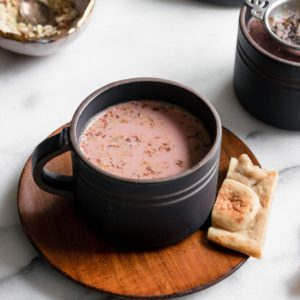

Quick Kashmiri Noon-Chai

Description
A Pink Drink!
20 minute cook time. Serves 2.
Ingredients
For Ice Water
- 1 cup room temperature water
- 2-3 large ice cubes
For Kashmiri Chai
- 1 cup water
- 2 tbsp Kashmiri chai leaves, or sub any non-bitter green tea leaves
- 2 star anise (badiyan)
- 6-8 green cardamom pods
- 2 whole cloves (loung), optional
- 1" cinnamon stick, optional
- 1/8 tsp heaped baking soda
- 1 cup whole milk
- ½ cup half and half
- 1/4 tsp kosher salt – may need less if using sea salt, or to taste
- 2-2.5 tbsp sweetener of choice
For Serving (Optional)
- ½-1 tbsp raw almonds, crushed using mortar and pestle
- ½ tbsp unsalted pistachios, crushed using mortar and pestle
Steps
- Prepare ice water: Combine room temperature water with 2-3 large ice cubes and set aside
- Heat a medium saucepan over high heat. Add water, Kashmiri chai leaves, star anise, green cardamom pods, cloves and cinnamon (if using) and bring to a boil.
- Once it comes to a boil, add the baking soda. It’ll fizz a little. Allow this mixture to boil over high heat for 5-6 minutes. Occasionally, use a ladle to aerate (scoop and pour back) the tea. You’ll notice the froth in the water go from pale green to a deep pink color. If not, add another 1/8 tsp of baking soda. (See Note 2) The water will be greatly reduced, almost evaporated.
- Add the prepared ice water (discard any ice cubes). If you’d like, you can aerate several times to deepen the color. Add the milk, half & half, salt, and sweetener. Allow it to a come to a light boil, then immediately turn off the heat. Do not allow it to boil for too long as it'll start to lose some of its pink color. Taste and adjust salt and sweetener.
- Strain the tea into cups and add crushed almonds and pistachios, as desired.
Note: If after adding more baking soda, it’s still not turning pink, then try using different green tea leaves.